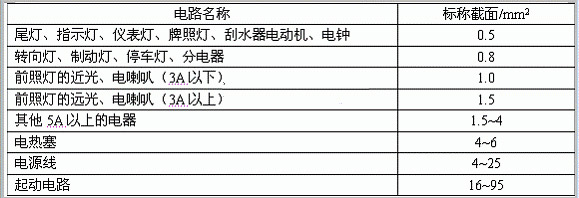
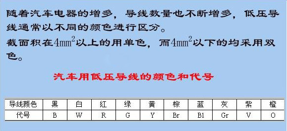
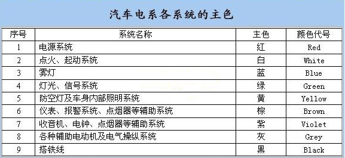

Color code identification of automotive electrical wiring harness wires
1. Low voltage wire
Ordinary low-voltage wires: Ordinary low-voltage wires are copper multifilament soft wires.The selection of wires is mainly based on the working current of the electrical equipment, but the minimum should not be less than 0.5mm2.
Starting cable: The starting cable is used to connect the battery and the main terminal of the starter switch. The cross-section has various specifications such as 25, 35, 50, 70mm2, etc., and the allowed current reaches 500-1000A.In order to ensure that the starter works normally and sends out sufficient power, it is required that the current and voltage drop of the 100A on the line should not exceed 0.1-0.15V.
Shielded wire: Shielded wire is also called coaxial cable. Its function is to isolate the wire from the external magnetic field and prevent the wire from being interfered by the external magnetic field. It is especially effective in preventing high-voltage ignition interference of gasoline engines.Shielded wires are often used in low-voltage weak signal lines, such as antenna connection lines and communication between various sensors and electronic control units. They are commonly used in detonation signal circuits, oxygen sensor signal circuits, etc.
Battery ground cable: The battery ground wire is a flat soft copper wire braided from copper wire. The lengths of ground wires commonly used in domestic automobiles are 300, 450, 600 and 760mm.
Color code identification of automotive electrical wiring harness wires

Color code identification of automotive electrical wiring harness wires

Color code identification of automotive electrical wiring harness wires

2. High voltage lines
High-voltage wires are used to transmit high-voltage electricity. Since the working voltage is very high and the current intensity is small, the insulation coating of the high-voltage wires is very thick and has good voltage resistance, but the cross-sectional area of the wire core is very small.There are two types of high-voltage wires for domestic automobiles: copper core wires and damping wires.
3、Automotive Wiring Harness
Wiring Harness: In order to avoid clutter, facilitate installation, and protect the insulation of the wires, all wires on the car (except for high-voltage wires) are generally braided with cotton yarn or half-wound with thin polyvinyl chloride tape to bundle wires of different specifications.
The composition of Wiring Harness: consists of wires, terminals, connectors, sheaths, etc.
Terminal: Generally made of brass, copper, and lead materials, its connection with the wire is made by cold riveting.
Plug connector: used for connection between wires. In order to ensure reliable connection, primary locking and secondary locking devices are generally used.
Things to note when installing Wiring Harness:
l Wiring Harness should be fixed with circlips or trip nails to prevent loosening and wear.
l The Wiring Harness should not be pulled too tight, especially at corners.
l When connecting electrical appliances, they should be connected to the electrical appliances respectively according to the specifications of the connector and the color of the wires or the color of the casing at the joint. If it is not easy to distinguish the ends of the wires, you can generally use a test light to separate them.
Domestic Wiring Harness color code:
American Automotive Wiring Harness Color Code
Domestic Wiring Harness color code:
| English | Chinese | abbreviation | English | Chinese | abbreviation |
|---|---|---|---|---|---|
| Black | black | B | Orange | orange color | O |
| White | White | W | Yellow | yellow | Y |
| Gray | grey | Gr | Green | green | G |
| Brown | brown | Br | Blue | blue | Bl |
| Red | red | R | Violet | Purple | V |
American Automotive Wiring Harness Color Code
| abbreviation | English | Chinese | abbreviation | English | Chinese |
| Bk | Black | black | Bu | Blue | blue |
| BN | Brown | brown | CR | Clear | transparent |
| Dk Bu | Dark Blue | dark blue | Dk GN | Dark Green | dark green |
| GN | Green | green | GY | Gray | grey |
| LT Bu | Light Blue | light blue | LT GN | Light Green | light green |
| OG | Orange | orange color | Pk | Pink | pink |
| PL | Purple | Purple | RD | Red | red |
| TN | Tan | brown | VI | Violet | pink purple |
| WT | White | White | YL | Yellow | yellow |
European Automotive Wiring Harness Color Codes
| abbreviation | English | Chinese | abbreviation | English | Chinese |
| BL | Blue | blue | BR | Brown | brown |
| EL | Gream | milky | GE | Yellow | yellow |
| GN | Green | green | GR | Gray | grey |
| M | Maroon | maroon | NF | Neutral | light gray |
| OG | Orange | orange color | RS | Pink | pink |
| RT | Red | red | SW | Black | black |
| VI | Violet | pink purple | WS | White | White |
| HBL | Light Blue | light blue | HGN | Light Green | light green |
The meaning of the main colors of low-voltage wires in each system in automobile circuits
| Serial number | System name | Main color of wire | Code name |
| 1 | Electrical installation ground wire | black | B |
| 2 | Ignition and starting system | white | W |
| 3 | Power system | red | R |
| 4 | Light signaling system (including turn indicators) | green | G |
| 5 | Anti-aircraft light system and body interior lighting system | yellow | Y |
| 6 | Instrument and alarm indication system and horn system | Brown | Br |
| 7 | Headlights, fog lights and other exterior lighting systems | blue | BL |
| 8 | Various auxiliary motors and electrical control systems | Ash | Gr |
| 9 | Auxiliary device systems such as radios, electric clocks, and cigarette lighters | purple | V |
Allowable carrying current of low-voltage wires for automobiles/A
| Copper core wire cross-sectional area/mm2 | 0.5 | 0.75 | 1 | 1.5 | 2.5 | 4 | 6 | 10 | 16 | 25 | 35 | 50 |
| Carrying capacity 60% | 7.5 | 9.6 | 11.4 | 14.4 | 19.2 | 25.2 | 33 | 45 | 63 | 82.8 | 102 | 129 |
| Ampacity 100% | 12.5 | 16 | 19 | 24 | 32 | 42 | 55 | 75 | 105 | 138 | 170 | 215 |
Disclaimer: Copying or reprinting any content on this site is prohibited!